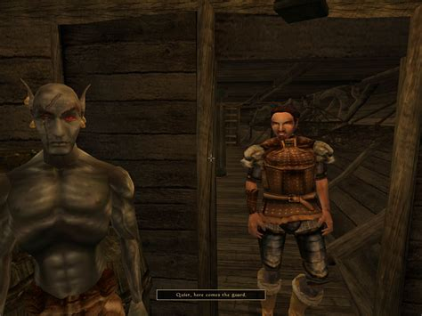

The Release of Morrowind
A third title in The Elder Scrolls series was conceived during the development of The Elder Scrolls II: Daggerfall, though it was initially to be set in the Summerset Isles and called Tribunal. Following the release of Daggerfall, it was set up around an SVGA version of XnGine, which Bethesda later used in The Elder Scrolls Legends: Battlespire, and set in the province of Morrowind. Released in 2002,on both windows and XBOX. By 2003, Morrowind had attained "Game of the year", and rereleased a GOTY version with two expansion packs, Tribunal and Bloodmoon. Both of these added more gameplay, new quests, new enemys, and ne weapons and armor.
The Big Plot
While Morrowind contains many quests and storylines, the central plot revolves around the Tribunal, a triumvirate of god-like beings ruling over Morrowind and their struggle against a former ally: the demigod Dagoth Ur and his Sixth House – a cult of followers stretching out from Red Mountain, the volcanic center of Vvardenfell. Dagoth Ur has used the Heart of Lorkhan, an artifact of great power, to make himself immortal and now seeks to drive the Imperial Legion occupiers from Morrowind using his network of spies, as well as Akulakhan, an enormous mechanical golem powered by the Heart of Lorkhan.[4][29] After a storm and a strange dream vision, the player character begins in a town called Seyda Neen. Fresh off a boat from a mainland prison, they have been freed by the string-pulling of the current ruler of the Tamrielic Empire, Emperor Uriel Septim VII. The player is given the task of meeting Caius Cosades, a member of the Blades, a secret group of spies and agents working for the Emperor and the Empire.[11] Cosades inducts the player to the Blades on the Emperor's orders and sets them on various quests to uncover the mysterious disappearances and revelations that the citizens of Vvardenfell have experienced, particularly the Sixth House and the Ashlander prophecies of the Nerevarine. It is later revealed that the induction under Cosades, and the player's release from prison, was due to the Emperor's suspicion that the player might be the Nerevarine – a reincarnation of the legendary Dunmer hero Indoril Nerevar – or at least someone who would make a convincing impostor to use for political gain. The player is tasked with uncovering the prophecies regarding the Nerevarine and to fulfill them to finally defeat Dagoth Ur and his Sixth House cult. Prophecies from the nomadic Dunmer people living in the Ashlands, the Ashlanders, predict that Nerevar's incarnate will fulfill a set of seven prophecies. The first two prophecies are that the Nerevarine will be born on a certain day to uncertain parents, and will be immune to Corprus disease, a Divine disease created by Dagoth Ur. The player has already fulfilled the first. The player then becomes immune to Corprus by contracting the disease and surviving an experimental cure. Fulfilling these, the player seeks to complete the third prophecy: finding the Moon-and-Star, the symbolic ring originally worn by Nerevar which has the power to instantly kill anyone who tries to wear it. Upon finding and equipping the ring, the player receives a vision from Azura, the ancient Daedric Prince of the Dawn and Dusk, who confirms that the player is Nerevar's incarnate. The Nerevarine completes the fourth and fifth trials, which are to rally the Great Houses of the Dunmer and Ashlanders of Vvardenfell under one banner. After receiving the support and being declared "Hortator" by every Great House and "Nerevarine" by all nomadic Ashlander tribes, the player is officially called "Nerevarine" by the Tribunal Temple, who normally persecutes anyone to death who claims to be the Nerevarine. The Nerevarine is invited to the palace of the poet god-king Vivec, one of the three deities that form the basis of Morrowind's religion known as the Tribunal, to discuss the assault on Dagoth Ur's stronghold in the heart of Red Mountain. Vivec presents the player with the gauntlet 'Wraithguard', an ancient Dwemer artifact that allows the use of the tools Sunder and Keening. These ancient weapons were created by the Dwemer to tap into the power of the fabled Heart of Lorkhan, which they found beneath Red Mountain - and these same tools have been used by the Tribunal and Dagoth Ur to reach their god-like status. The tools can also destroy the fabled Heart of Lorkhan, but without having the Wraithguard equipped, they will deal a fatal blow to whoever wields them.[30] The player travels into Red Mountain to Dagoth Ur's citadel. After talking with Dagoth Ur, who attempts to sway the player to his side with the claim that he is merely following Nerevar's final orders, the player and Dagoth Ur fight. Besting Dagoth Ur, the Nerevarine soon discovers that while the Heart of Lorkhan is still intact, Dagoth Ur remains immortal and he soon returns from death. Making his way to the heart of the mountain, the Nerevarine finds the Heart of Lorkhan and destroys it, severing Dagoth Ur from his power and ultimately killing him. Akulakhan's Chamber, where Lorkhan's heart resided, is destroyed in the process as the cavern collapses and in turn, Red Mountain is cleared of blight and The Sixth House falls. Upon escaping from the chamber, the Nerevarine is congratulated by Azura who comes to reward the player's efforts of fulfilling the prophecy.[31] The game does not end upon the completion of the main quest, but the game world Vvardenfell is affected in many different ways. The Blight Storms cease to plague the land and the weak-minded followers of the Sixth House are reawakened, remembering nothing of their ordeal. The Dreamers who harassed the Nerevarine fall silent and the Nerevarine becomes widely known as the savior of Vvardenfell. The quintessential consequence of defeating Dagoth Ur was the destruction of the Heart of Lorkhan. Due to their immortality linked to the heart, Vivec and the Tribunal become mortal again, leaving Vivec's future in question and up to the player to determine his fate. The loss of divinity among the Tribunal is the main plot point of the game's first expansion, Tribunal.
Gameplay
Morrowind begins with the player's character, having been imprisoned, arriving in Morrowind by boat to be pardoned. A tutorial depicting the prisoner's release moves the player through the process of character creation. The player is successively asked questions by a fellow prisoner, an officer, and a bureaucrat as the player is registered as a free citizen; choosing, in the process, the player character's name, race, gender, class, and birthsign. These affect the player's starting attributes, skills, and abilities. The player determines their class in one of three ways: picking from a class list, generating a class via questions, or creating a custom class themselves
Skill System
Once you have chosen, or created your class. Your are given skills which you will get five major and five minor skills. To level you will increase these major and minor skills, once you have increased any number of these skills you will in turn gain a level after you sleep. These skill increases improve quite a bit of abilities,as well as hit rate, block rate, lockping etc. Increasing skill of any of the schools of magic in the game will give you access to better spells, some of which will not be accessable until higher levels or higher skill points.
Free Form and Open World Design
Morrowind, following the tradition established by its predecessors in The Elder Scrolls series, is an open world, with few constricting boundaries on the player's actions. From the beginning of the game, players are put in a world where they are left to roam, steal, quest, and explore, without necessarily following the main quest. To allow for this behavior, in addition to creating an extensive main quest, Morrowind provides detailed discursive quests for a variety of factions including various guilds, religious organizations, and aristocratic houses. All in addition to side-quests found by exploration. The main plot itself may be undertaken in many ways. The choices the player makes in their performance of these tasks thus become methods of character interpretation; a set of dramatic tools establishing the player's newly created self-identity.